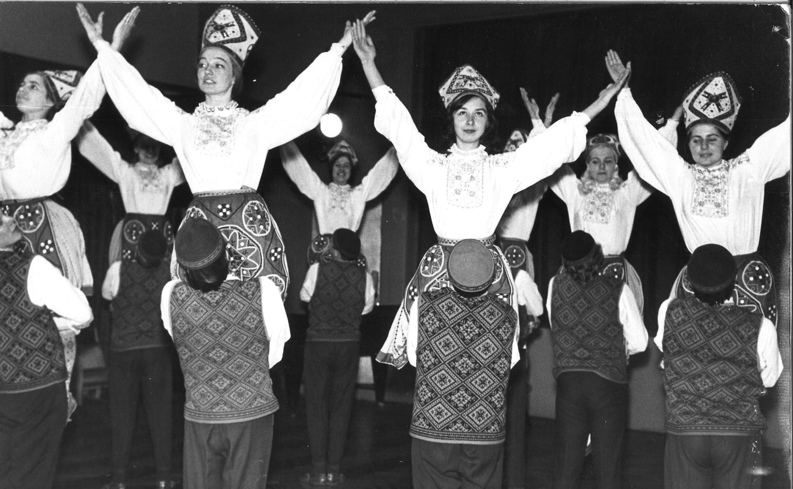

Milline rahvatants oled sina?
Kui sulle antaks tasuta reis, kuhu läheksid?
Soome
Jaapan
Itaalia
Austria
Järgmine küsimus
Milline neist suvistest lauludest on sinu lemmik?
"Kauges külas" Curly Strings
"Pärlipüüdja" Karavan
"Aluspükse" 5MIINUST
"Tantsuriik" Triibupasta
Eelmine küsimus
Järgmine küsimus

Kas sulle meeldivad pigem suvised, talvised või nende vahepealsed ilmad?
Vasakul pool on "Talvised" ja paremal "Suvised"
Eelmine küsimus
Järgmine küsimus
Kas sa oled varem rahvatantsu tantsinud?
Ei
Ja
Eelmine küsimus
Järgmine küsimus
Milline järgnevatest valikutest sobib sinu iseloomuga kõige paremini?
Rahulik ja tasakaalukas
Sotsiaalne ja sõbralik
Energiline ja seiklushimuline
Kohanemisvõimeline ja loov
Eelmine küsimus
Järgmine küsimus
Milline muusikastiil paneb sind kõige rohkem liikuma?
Rahulik ja traditsiooniline muusika
Lõbus ja meloodiline rütm
Kiire tempoga lood
Nii kiire kui ka rahulikutempoga muusikapalad
Eelmine küsimus
Järgmine küsimus
Kuidas suhtud keerukatesse sammukombinatsioonidesse?
Eelistan lihtsust
Mõõduka keerukusega sammud
Mida keerulisem, seda parem!
Meeldib vaheldus
Eelmine küsimus
Järgmine küsimus
Kui kaua sa suudaksid tantsida puhkuseta?
5 minutit
20 minutit
Terve õhtu
Energiat jagub kõige jaoks
Eelmine küsimus
Järgmine küsimus
Milline pidu sinu arvates kõige paremini sobib?
Kodune istumine perega
Sõprade juures väike kokkusaamine
Beach Grind
Tüdruksõbraga kodus veinitamine
Eelmine küsimus
Järgmine küsimus
Kui palju sulle meeldib teistega koos tantsida?
Mulle meeldib pigem üksi tantsida
Väike grupp on ideaalne
Suur seltskond annab energiat
Võin tantsida üksi kui ka grupiga
Eelmine küsimus
Saada ära